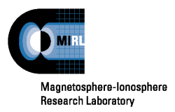

Ground-Based Projects
ARRO: the development of an Autonomous
Real-time Remote Observatory capable of
accommodating a wide variety of
instruments in polar climates
Antarctic Wind Farm: the testing of
small-scale, commercial micro-turbines
at the South Pole as part of the ARRO
ELF-ULF: measuring ELF and ULF waves
with instruments located at the (1)South
Pole and (2)McMurdo Stations in
Antarctica, (3)Iqaluit, Nunavut and
(4)Sondrestrom, Greenland
Rockets, Spacecraft, and Imaging
SERSIO: Svalbard EISCAT Rocket Study of Ion
Outflows--a sounding rocket experiment
to investigate ion outflows in the polar
cusp using EISCAT Svalbard Radar
Cascades: a sounding rocket experiment to
investigate motions and structure of
electron precipitation and electric fields
in pre-midnight poleward edge discrete
aurora
DERBI: the aurora imager to be flown on
the sounding rockets of the SERSIO
and Cascades campaigns to gather
information important to auroral physics
and our understanding of the aurora
ePOP: Enhanced Polar Outflow Probe--
testing and calibrating two imagers for
this space environment micro-satellite
designed to explore plasma and
atmospheric escape processes in the
polar ionosphere and upper atmosphere
Contact information:
Marc R. Lessard
Thayer School of Engineering
Dartmouth College
8000 Cummings Hall
Hanover, NH 03755
(603)646-2608
marc.r.lessard@dartmouth.edu